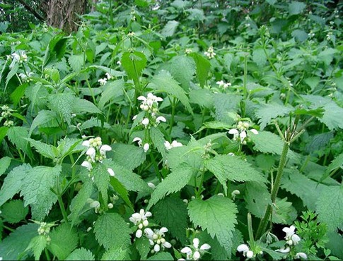

Tên khác:
Nàng hai, cây ngứa, cây tầm ma..
Tên khoa học:Urtica dioica L
Tiếng trung: 蕁麻 (Tầm ma)
Cây nàng hai-Tầm ma
( Mô tả, hình ảnh, thu hái, chế biến, thành phần hoá học, tác dụng dược lý ....)
Mô tả:

Cây thân thảo sống lâu năm cao khoảng 60 đến 150 cm, lan rộng tạo thành vùng riêng của chúng nhờ hệ thống rể dài và phát triển rộng. Tất cả các cơ quan của cây đều được bao phủ bởi một hệ thống lông tuyến.Có hai loại lông ngứa :
- một loại lông dài, có chất độc làm đau nhức.
- một loại lông ngắn, mềm.
Thân thẳng đứng không phân nhánh, vuông. Lá, màu xanh đậm hay nhạt, mọc đối, hình trứng, nhỏ, ở đầu ngọn giáo, các tế bào biểu bì có chứa những tiểu thể hóa calci được gọi là cystolithes. Hình dáng của cystolithes kéo dài nhiều hay ít, đây là đặc tính của riêng họ Urticaceae.
Hoa, màu trắng hay trắng ngà, đơn phái, trong chùm gié nhỏ, biệt chu, hoa đực và hoa cái ở riêng biệt 2 cây khác nhau đây là trường hợp dioecy, có những trường hợp 2 hoa đực và cái cùng một chân cây trường hợp monoecy, nhưng rất hiếm. Hoa cái gồm 4 cánh hoa, trong đó 2 rất lớn bao lấy một bầu noản 1 tâm bì, và 2 cánh hoa bên ngoài nhỏ . Hoa đực, gồm 4 cánh hoa nhỏ, 4 nhụy đực, cong lại trong nút và thẳng ra đàn hồi tại bao phấn, phóng thích đám bụi phấn hoa rất nhỏ. Thụ phấn nhờ gió gọi là phong môi.
Quà hình trứng, được bao bởi 2 cánh hoa lớn.
Phân bố:
Cây Tầm ma có mặt khắp nơi trên thế giới, từ châu âu, châu mỹ, trung quốc (Quảng Tây, Tây Tạng, Hải Nam, Vân Nam, Quảng Đông) đến Ấn Độ, Inđônêxia, Malaixia và Việt Nam.
Ở nước ta thường gặp ở rừng một số nơi thuộc Thanh Hoá, Thừa Thiên - Huế, Ninh Thuận tới Bà Rịa.
Bộ phận dùng: Hạt, dịch rễ - Semen et Jus Radicis Dendrocnides Sinuatae.
Tác dụng dược lý:
Dịch chiết lá cây nàng haiđã từng dược thí nghiệm làm thuốc lợi tiểu cho những người tâm suy kiệt, tụ huyết mãn tính
Vị thuốc nàng hai:
( Công dụng, Tính vị, quy kinh, liều dùng .... )
Tính vị:
Toàn cây có độc, rất ngứa.
Độc chất :
Những lông urticants chứa một dung dịch làm đau ( acide formique ) chất này truyền dưới da tiếp xúc đơn giản và 1/ 10000 mg đủ để nổi lên những mụn đỏ ( khu chẩn ).
Ứng dụng lâm sàng của nàng hai:
Nó có thể được sử dụng như một thuốc lợi tiểu, long đờm, giảm đau và thuốc bổ. Để điều trị tăng sản lành tính tuyến tiền liệt, thiếu máu, viêm khớp, thấp khớp, sốt mùa hè, các bệnh dị ứng khác, bệnh thận, hội chứng kém hấp thu . Cải thiện bướu cổ, tình trạng viêm phổi . Được sử dụng trên các sản phẩm chăm sóc tóc giúp kích thích các nang tóc và da đầu dầu trị gầu ....
Trị Tuyến tiền liệt prostate phù to lành tính ( giai đoạn I và II )
Rể khô : sửa soạn nấu sắc : Để 1, 5 gr rể trong 150 ml nước lạnh.
Đun sôi, đun trong 1 phút tắt lửa, ngâm trong 10 phút. Uống một tách ( 150 ml ), 3 hay 4 lấn / ngày .
Trị sốt kéo dài
Ở Ấn Độ, hạt cũng được dùng như hạt Mùi, dịch rễ dùng trị sốt kéo dài.
Rối loạn tiểu tiện do những bướu tuyến tiền liệt
Rể cây: Nấu sắc 30 gr – 60 gr trong 1 lít nước, để sôi trong 10 phút, uống 2 ngày.
Trị phong thấp :
nàng hai 50 gr, nước 1 lít, đun sôi trong 10 phút dùng trong 48 giờ giữa bửa ăn
Trị đau viêm khớp và phong thấp
Lá tươi : Đắp lá tươi trong khoảng 30 giây trên phần đau có thể giãm đau viêm khớp
Quả cây dùng ngoài da chữa bệnh thấp khớp
Dùng dể ăn:
dùng dọt và những lá non Khi nấu sôi, nhiệt độ tiêu hủy tính độc của chất urticant, sau khi sôi 1 dạo, dùng như rau xanh, hoặc luộc hoặc nấu canh…… Trong thời kỳ đói, người ta dùng thêm với cháo súp. Nàng hai là một rau xanh tốt rất giàu chất sắt Fe và sinh tố C.
Ở Java, người ta dùng cây để kích thích trâu chọi nhau.
Tham khảo
TÁC DỤNG THẦN KÌ CỦA CÂY TẦM MA MÀ KHÔNG NHIỀU NGƯỜI BIẾT
Người ta thường nghĩ đến cây Tầm Ma là loại cỏ mọc dại, không nhiều tác dụng nhưng thật sự, cây Tầm Ma đã được sử dụng từ nhiều thế kỷ như là một vị thuốc. Vốn sinh trưởng ở vùng có khí hậu ôn đới trên khắp thể giới và sớm được người Hy Lạp nghiên cứu tìm ra công dụng từ thế kỉ thứ I, cây Tầm Ma rất được ưa chuộng ở các nước Châu Âu như Đức hay Áo.
Tất cả các phần của cây Tầm Ma đều có thể sử dụng làm thuốc được: các cành non được hái vào mùa xuân để làm thuốc bổ và rau, rễ sẽ được thu hoạch vào mùa thu để làm thuốc lợi tiểu, và các phần trên ngọn như hạt, lá được hái vào mùa hạ khi cây đang trổ hoa. Đối với làn da, nơi thu hút sự chú ý cũng như biểu hiện tình trạng sức khỏe dễ nhận biết nhất, cây Tầm Ma có tác dụng tốt trong việc hỗ trợ điều trị mụn trứng cá, se khít lỗ chân lông, kháng viêm, trị rụng tóc, dưỡng tóc và trị gàu. Hơn thế nữa, nếu lấy cây Tầm Ma xay lấy nước hay dùng tình dầu của chúng thì bạn có thể giảm nhẹ các cơn đau đến từ các bệnh về khớp như: thấp khớp, bệnh gút và viêm gân.
Một số các công dụng khác của loại thực dược này bao gồm: hỗ trợ điều trị u xơ tiền liệt tuyến, bổ sung chất xơ, trị nhiễm trùng đường tiểu, giảm các bệnh dị ứng, cải thiện kích thích và ham muốn, giúp cầm máu, hỗ trợ điều trị thiếu máu và đặc biệt là các bệnh liên quan tới hệ tiêu hóa như khó tiêu và táo bón.
Cách sử dụng cây Tầm Ma cũng khá đơn giản. Cây Tầm Ma đạt tác dụng tốt nhất khi được dùng trong nấu ăn, nấu trà để có tác dụng hiệu quả với da và tóc. Đơn giản hơn nữa, bạn có thể tìm đến các loại thực phẩm chức năng có sẵn thành phần cây Tầm Ma dưới dạng viên nang để sử dụng và mang lại sự biến chuyển tức thì chơ cơ thể.
theo vienrautonghop241.vn
Nơi mua bán vị thuốc Nàng hai-Tầm ma đạt chất lượng ở đâu?
Trước thực trạng thuốc đông dược kém chất lượng, nguồn gốc không rõ ràng,... xuất hiện tràn lan trên thị trường, làm ảnh hưởng tới hiệu quả điều trị cũng như ảnh hưởng tới sức khỏe của bệnh nhân. Việc lựa chọn những địa chỉ uy tín để mua thuốc đông dược là rất quan trọng và cần thiết. Vậy khách hàng có thể mua vị thuốc Nàng hai-Tầm ma ở đâu?
Nàng hai-Tầm ma là vị thuốc nam quý, được sử dụng rộng rãi trong YHCT. Hiện tại hầu hết các cửa hàng thuốc đông dược, phòng khám đông y, phòng chẩn trị YHCT... đều có bán vị thuốc này. Tuy nhiên người mua nên chọn những địa chỉ có uy tín, đảm bảo chất lượng, có giấy phép hoạt động để mua được vị thuốc đạt chất lượng.
Với mong muốn bệnh nhân được sử dụng những loại dược liệu đúng, chất lượng tốt, phòng khám Đông y Nguyễn Hữu Toàn không chỉ là đia chỉ khám chữa bệnh tin cậy, uy tín chất lượng mà còn cung cấp cho khách hàng những vị thuốc đông y (thuốc nam, thuốc bắc) đúng, chuẩn, đạt chuẩn chất lượng. Các vị thuốc có trong tiêu chuẩn Dược điển Việt Nam đều được nghành y tế kiểm nghiệm đạt chất lượng tiêu chuẩn.
Vị thuốc Nàng hai-Tầm ma được bán tại Phòng khám là thuốc đã được bào chế theo Tiêu chuẩn NHT.
Giá bán vị thuốc Nàng hai-Tầm ma tại Phòng khám Đông y Nguyễn Hữu Toàn: Gọi 18006834 để biết chi tiết
Tùy theo thời điểm giá bán có thể thay đổi.
+ Khách hàng có thể mua trực tiếp tại địa chỉ phòng khám: Cơ sở 1: Số 481 lô 22 Lê Hồng Phong, Phường Gia Viên, Thành phố Hải Phòng
+ Mua trực tuyến: Thuốc được chuyển qua đường bưu điện. Khi nhận được thuốc khách hàng thanh toán tiền COD.
Tag: cay Nang hai tam ma , vi thuoc Nang hai tam ma , cong dung Nang hai tam ma , Hinh anh cay Nang hai tam ma , Tac dung Nang hai tam ma , Thuoc nam
Thaythuoccuaban.com Tổng hợp
*************************